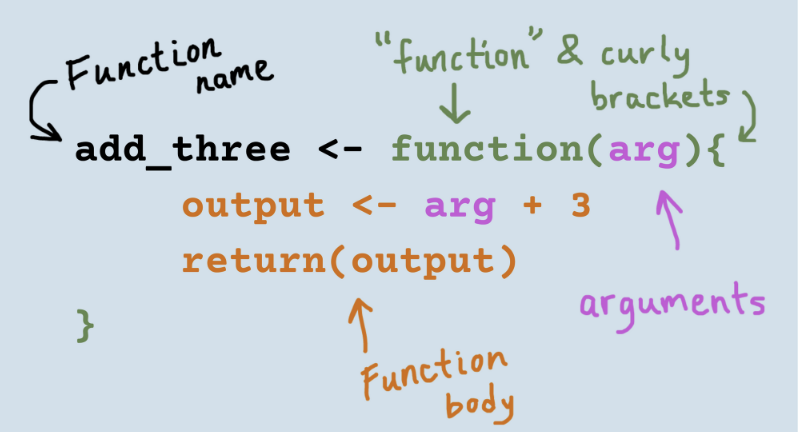
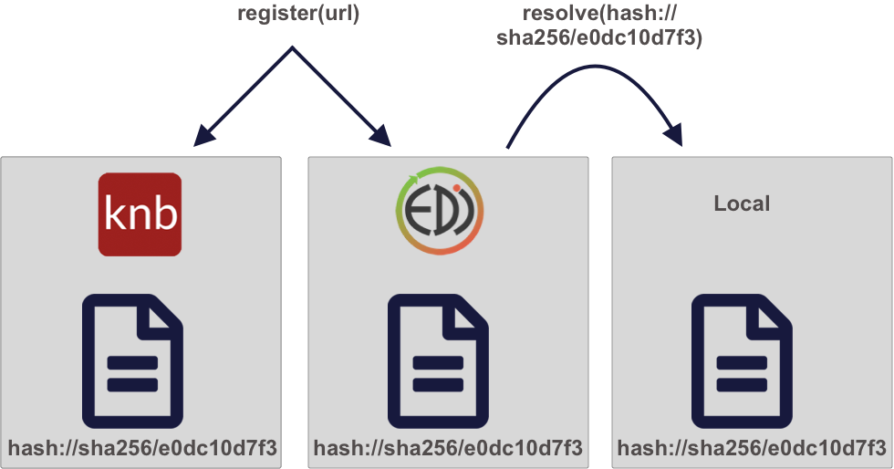

Lessons about:
R & RStudio
Lessons about:
Data Management
Git & GitHub
R & RStudio
Reproducible Workflows
Team & Synthesis Science
Categories
All
(13)
advanced
(1)
beginner
(4)
data vis
(3)
data wrangling
(1)
github
(1)
intermediate
(7)
quarto
(1)
text data
(1)
Programming in R and RStudio
Cleaning and Wrangling Data
beginner
data wrangling
It is essential to have good tools to wrangle data to fit our needs. Cleaning data a necessary step before your analysis.
Image credit: tidydatatutor.com

Creating Functions in R
intermediate
Take your coding skills to the next level by incorporating your own functions in your analysis.
Image credit: rforecology.com
Creating R Packages
intermediate
Package your work and share it! Creating your own package allows you to organize your code and data in a way that easily be shared and reused.
Introducing Flexdashboards
advanced
As an alternative to Shiny, Flexdashboards are great for creating lightweight interactive dashboards that require less code-heavy expertise.
Image credit: Posit
Introduction to Data Visualization
beginner
data vis
Data visualization is a great tool to explore and communicate your data. Learn the basics of
ggplot2
and other data vis packages.
Image credit: Art by Allison Horst
Introduction to Programming in R using RStudio
beginner
New to R? This lesson walks through the basic concepts of the R programming language.
Image credit: Art by Allison Horst
Introduction to Shiny
intermediate
data vis
Shiny apps provide interactive features for letting others share and explore data and analyses.
Image credit: Shiny Logo
Literate Analysis with Quarto
quarto
Combine prose and code in one document! Literate analysis is a fundamental tool for making your work reproducible.
Image credit: Art by Allison Horst
Publishing to the Web using GitHub Pages
github
intermediate
Tools like Quarto, RMarkdown, and GitHub allow you to share your work with others on a beautiful and easy-to-read web page.

Reproducible Data Access
intermediate
Accessing data is the first step in any analysis. Doing this in a portable manner is the ultimate goal to make your work as reproducible as possible.
Image…
Using
sf
for Spatial Data
intermediate
data vis
Handling spatial data can be tricky. The
sf
package allows for integrating R spatial software with the
tidyverse
if desired.
Image credit: Art by Allison Horst
Working with U.S Census Data in R
intermediate
Introducing the
tidycensus
package. This packages helps you streamline your workflow when working with census data.
Image credit:
tidycensus
logo
Working with text data in R
beginner
text data
Apply data wrangling and data visualization methods to text, making text mining easier, more effective, and consistent.
Image credit: displayr.com
No matching items
Git & GitHub
Reproducible Workflows